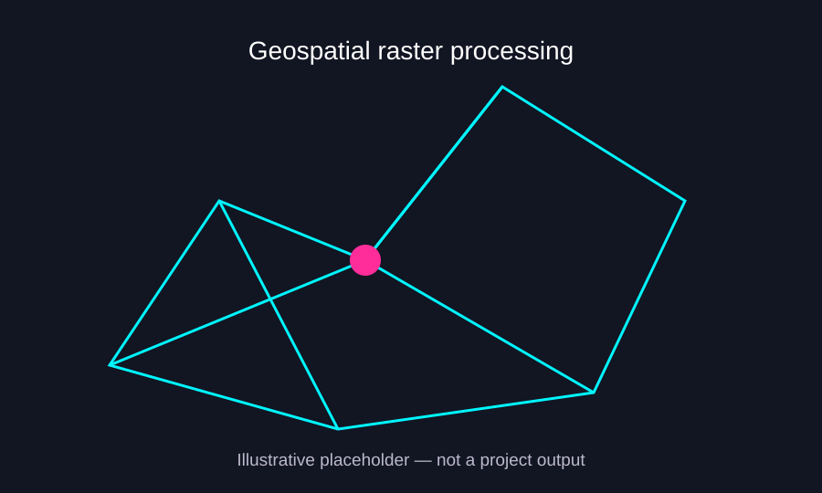

NASA DEVELOP · LAMBAYEQUE · PERU
Water Resources & Mesquite Forest Change
Exploring vegetation change and water availability in Lambayeque's mesquite forests.
01Project summaryResearch context
During NASA DEVELOP, I worked on a water-resources project in Lambayeque, Peru, examining how changing environmental conditions might relate to the decline of mesquite forests.
02MethodologyData processing and analysis
I helped build the NASA data extraction and preprocessing workflow, preparing satellite and environmental observations for ArcGIS Pro analysis. This shared approach involved automating acquisition and processing of Earth-observation datasets. I also contributed to a time-series analysis of NDVI, precipitation, and soil moisture to examine how changes in water availability coincided with vegetation conditions.
03FiguresAwaiting original outputs

04Results and next stepsHistorical materials pending
The time-series approach was intended to examine relationships between vegetation condition and water-related variables. The original datasets, figures, and results have not yet been supplied for this portfolio, so specific findings and causal conclusions are intentionally left open.
When the original scripts and figures are available, I can document the processing steps and analytical outputs more precisely.